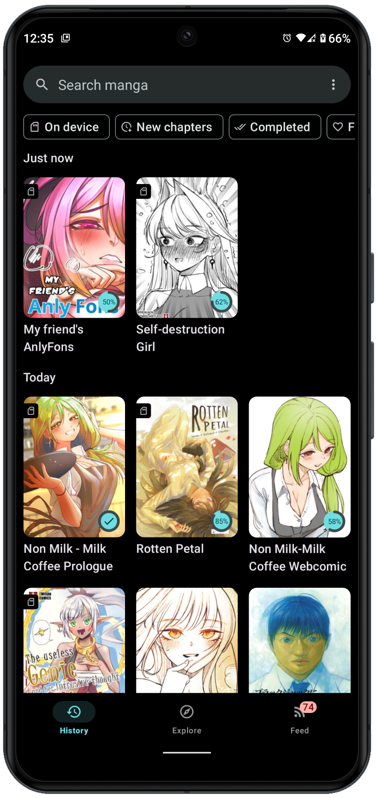
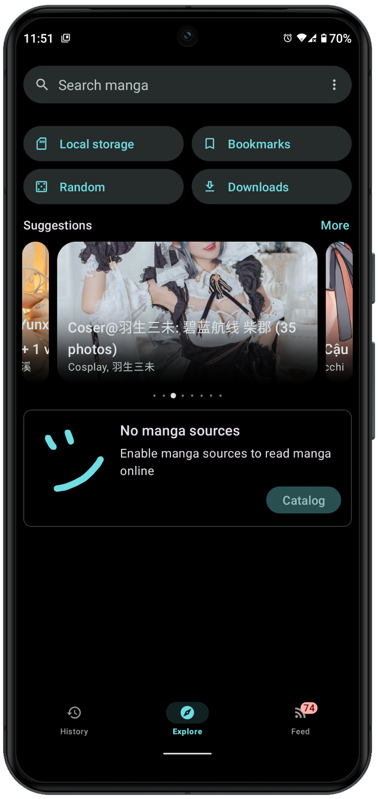

Usagi 用了半年才踩明白的 5 个坑，第一个就差点让我放弃
Usagi 看着是个清爽的阅读器 app，实际上手才发现里面藏着不少容易踩的小陷阱——授权失败、匹配不准、显示调伤眼，每一个都能把新人劝退。
Usagi官网是一款主打开源免费的漫画阅读器，界面干净、没有广告，从官方下载拿安装包装上去就能用。但就是这么一个看起来"傻瓜式"的东西，我自己用下来前前后后踩了不少坑，每一个都有那么一瞬间让我想干脆换别的 app 算了。写这篇就是把这些坑一条一条掰碎说清楚，你要是刚入门或者准备入坑，看完至少能少走几条弯路。
坑一：追踪服务授权完跳回来直接"授权失败"
我第一次接追踪服务的时候，在授权页填完账号密码点确认，浏览器页自动关了，Usagi 里跳出来一行红字"授权失败"。我琢磨了好久，心想是不是我复制的地址错了？换了个浏览器重来一遍，还是失败。

症状：浏览器授权流程走完，回到 Usagi 后没反应或者直接报"授权失败"，追踪服务页面里也看不到 Usagi 的授权记录。
原因：大概率不是你操作错了。我后来去Usagi文档翻了一下才知道，有几个追踪服务对国内网络环境不太友好，OAuth 回调那一步可能被拦。另外，如果你之前授权过一次但 token 过期了直接重试，而没先去追踪服务那边把旧授权撤销掉，两边状态对不上也会失败。还有一种情况是 Usagi 需要调用系统浏览器完成授权，如果你手机上没装标准浏览器、只留了个 WebView 壳子，回调就传不回来。
解法：先确认手机上装了 Chrome 或者系统自带浏览器，能正常打开追踪服务网站。如果有地区限制，得先开代理再走授权流程。之前授权过失败的，先去追踪服务网站的「授权应用」列表里找到 Usagi 那条，删掉再重新授权。我就是删了旧授权、开了代理之后一次就过了。
坑二：自动匹配的漫画全是同名的另一部
Usagi 绑定追踪服务后会自动帮你把本地漫画和追踪服务的条目对上，但我发现它匹配的经常不是我在读的那部——比如我本地放的是某部老漫画，它给我匹配成了同名的新番改编版，章节对不上、进度全乱。
症状：绑定完追踪服务，看匹配列表里的条目，标题一样但封面或章节数明显不对，手动同步之后追踪服务那边显示的进度完全跟我读的不是一回事。
原因：自动匹配用的是名称相似度算法。日语原名、中文译名、英文名、扫描版常用名，这几个版本只要有一个对得上就可能误匹配。尤其是一些经典作品，重制版、复刻版、不同出版社版本全都叫同一个名字，算法没法区分。
解法：别信自动匹配。绑定界面里每个条目旁边都有手动搜索的按钮，点进去搜原名、搜英文名、搜你最常用的那个译名，多换几个关键词总能找到正确的那条。我现在每次绑定完都花五分钟一条一条核对，比自动匹配省心多了。
坑三：读完一章追踪服务没更新，以为同步坏了
有几天我读完漫画之后习惯性刷一下追踪服务网站，发现进度没跟上，连续好几章都没同步上去。我以为 Usagi 出 bug 了，关了追踪再重新绑定，还是不行。
症状：Usagi 里显示已读完的章节，追踪服务网站上进度停在老位置不动，手动点"立即同步"也没反应。
原因：大部分追踪服务的 API 有写入频率限制，同步不是实时的。有的服务限每 15 秒才能调一次，有的每天还有总调用上限。Usagi 后台是排队推送的，网络稍微抖动一下就会延迟，慢的时候可能要等好几分钟才刷出来。还有一种情况是追踪服务账号的 API 配额用完了——比如有些服务每天限制 50 次推送，读得多了就得等第二天重置。
解法：先别急着重装。打开 Usagi 的追踪服务设置，手动点一下「立即同步」看有没有反应。等个三五分钟再刷新追踪服务网站。还是没动静的话，去追踪服务那边看看账号的调用配额是不是打满了。我之前就是配额用完了不知道，傻等了一晚上。
坑四：显示调得太狠，看半小时眼睛就废了
Usagi 的显示校正选项挺多的——亮度、对比度、色彩反转、夜间模式全有。我刚装的时候觉得好玩，把对比度拉到最高、色彩反转也开了，结果晚上躺床上看了半小时，眼睛累得要瞎，关掉之后看别的东西都是花的。
症状：调完显示设置觉得"好像更清晰了"，但实际阅读久了眼睛酸、疲劳感加重，甚至出现眩光、重影。

原因：对比度拉太高会让漫画的黑色部分变成死黑、白色部分变成死白，没有中间灰阶，眼睛瞳孔要不停在两个极端之间切换，很容易累。色彩反转适合白底漫画在夜间读，但如果是黑底白图的漫画（很多老漫画是这种），反转之后反而变成白底黑图，夜间看更刺眼。还有去锯齿选项，低端手机上关掉反而能提升翻页流畅度，开了之后每一帧都要做平滑处理，GPU 扛不住。
解法：对比度只微调，拉一点能看清分镜边界就行，别往极端拉。色彩反转只在白底漫画夜间读的时候开，其他情况别碰。夜间模式直接用预设的那个组合就行——它是低亮度、低蓝光、暖色一起调的，比你手动一项一项调科学多了。
坑五：翻页方向设反了，整部漫画翻页逻辑全乱
我第一次用 Usagi 的时候没注意翻页方向这个设置，默认是"右到左"。结果我读的那部国产条漫是从左往右翻的，每次点屏幕右半部分翻的是上一页，左半部分翻下一页，完全反着来。我还以为是漫画文件本身的问题，删了重新下载了两次。
症状：翻页按钮的方向和你预期的相反，点右边翻上一页、点左边翻下一页，或者垂直滚动模式下滚到顶了还在继续往上翻。
原因：Usagi 默认按日式漫画的阅读习惯设置——从右往左翻。但国产条漫、Webtoon 平台的漫画、欧美漫画，方向全不一样。还有些人习惯垂直滚动，有些习惯左右翻。默认设置不可能覆盖所有人。
解法：装好之后先到设置 → 阅读里把翻页方向改成你习惯的。如果读的是 Webtoon 条漫，把默认阅读器模式设成 Webtoon，它会自动切成垂直滚动。标准排版的黑白漫就保持标准模式，翻页方向按漫画产地选——日本漫画右到左，中国欧美漫画左到右。我现在养成习惯了，每下一部新漫画先确认一遍翻页方向，省得读着读着停下来翻设置。
防坑清单（30 秒速查）
- 追踪授权失败：先确认手机有标准浏览器、开代理、删旧授权再重走流程
- 匹配不准：别信自动匹配，手动搜多个关键词核对
- 同步延迟：等 5 分钟再刷，检查追踪服务配额有没有用完
- 显示调伤眼：对比度别拉极端，夜间读用预设夜间模式，色彩反转只给白底漫画
- 翻页反了：每部新漫画先确认翻页方向和阅读器模式
说实话，知道这些坑之后 Usagi 其实相当省心——界面清爽、功能全、没广告。只是这些小细节藏得比较深，第一次用的时候不容易注意到。我自己从踩完第一个坑到把所有设置调顺，花了大概两周。你看完这篇，应该十分钟就能搞定。对了，Usagi 这套完整资料我同步在三个仓库维护，GitHub 是主仓库，Gitee 和 GitCode 做国内备份，哪个访问方便就用哪个。